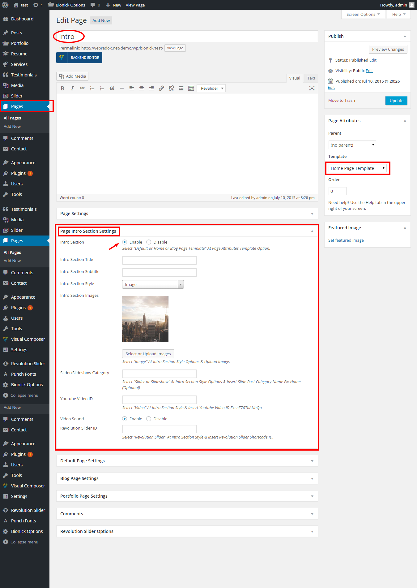

Setting The Front Page
Bionick has two types front page style and they are Multi-Page Site and One-Page Site.
Multi-Page Site
- Go to Settings > Reading
- Select A Static Page and choose your homepage from the Frontpage selection
- Go to Appearance > Menus and select Primary Menu from Theme Location
One-Page Site
- Create a New Page from the Pages > Add New and select Home Page Template form at the right side Template Option and create Intro page
- Go to Settings > Reading
- Select that Intro page as A Static Page from the Frontpage selection
- Go to Appearance > Menus and select One Page Menu from Theme Location.
Creating Intro Page (Example)
